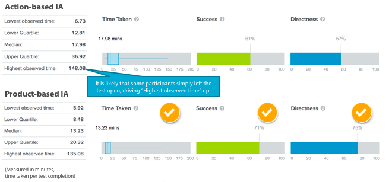
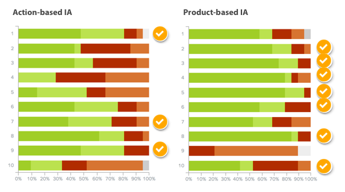

Services Catalogue
Client: House of Commons (HoC), Information Services
Timeline: 2 months
Tools: Treejack, Excel
My contribution: Information architecture development, test design, execution, analysis, usability review, and reporting
Team: An information architect and myself
Project Overview
House of Commons’ (HoC) Information Services (IS) provides a wide range of services to the employees at HoC. They needed a digital and telephonic interface where employees request and update service requests. As part of designing this interface, this project focused on the creating an information architecture to best support IS’s services. To determine the best way of organizing the catalogue, two IA concepts were developed to test on Treejack: a product/topic-based IA and an action-based IA.
Challenges
- IS is responsible for a great number and variety of services – many more than a BestBuy or an Apple store, as they provide hardware, software, internet services, and security services, as well as administrative services, such as resetting an account password. This variety created a number of challenges:
- Creating neat and mutually exclusive top-level categories of information
- Creating IAs that were distinctly product-based and action-based, instead of a lukewarm mix of the two concepts
- The IAs were developed with the aim of having similar levels of usability (using similar language, a similar number of top-level items, etc.). Equal levels of usability were difficult to achieve accurately because the IAs could not be measured throughout the development process.
Outcomes
- Both models scored similarly in all areas of evaluation (Time taken, Success, Directness).
- The product-based IA performed better, by a small margin, in all areas of evaluation.
- The results of this user research were recommended to design the Service Catalogue’s full IA.
IA Top Levels
Information architecture (IA) is the structure that underlies an interface like HoC’s Service Catalogue. It outlines how information will be organized to maximize user understanding. In the case of the Service Catalogue, the IA explains how and which words will be used at each stage of the catalogue’s interface (menu, page options).
Four levels of the menu/IA were developed for each of two approaches to the IA design. The Action-based IA presented first an action, then the product (ex. Fix > Computer). The Product-based IA presented first a product, then the action (ex. Computer > Fix).
To illustrate the two approaches, below are the top-level items only for each approach:
Action-based IA Top Levels:
- Track request status
- Discuss service/product options with IS
- Report an issue
- Manage accounts
- Acquire connection and building access
- Acquire device
- Configure connection
- Configure device and office setup
- Configure software
- Training & How-to
Product-based IA Top Levels:
- Track request status
- Passwords
- Internet and network access
- Accounts
- Devices and office setup
- Device plans
- Software
- Security
{kind=link}
{kind=link}
Treejack Test Findings
The two IA concepts were loaded onto Treejack, an online usability testing software. Treejack presents to test participants the levels of the IA without any visuals, allowing the research to zoom in on the IA.
A total of 40 participants took part in the research, with roughly half taking the Action-based IA test and the other half taking the Product-based IA test. All participants were given the same ten tasks to complete.
 The Product-based IA had better results, presumably because it had fewer options in the top level.
Looking at the results task-by-task, it was clear that both IAs relied too heavily on the participants’ knowledge of the process (choosing the right actions) and typology of products (choosing the right product category) to complete their tasks successfully.
{kind=link}
{kind=link}
{kind=link}
An IA approach that integrates both products and actions was recommended. As HoC plans to have the Service Catalogue on a telephone menu, the recommended IA follows industry best practices of having 5-8 items in the top level of a phone-operated menu.
Recommended IA Top Levels:
- Advice, Issue Reporting, or Request Status
- Accounts and Passwords
- Internet and Network Access
- Electronics and Plans
- Software
- Building Access
- Office Setup
What I learned
- Some tasks assigned in the Treejack test could have used more context (Some participants didn’t have the knowledge required to complete a task).
- Creating criteria around the full context of the IA (how many levels are possible, how does the telephone menu work) could have better structured the IA development process.